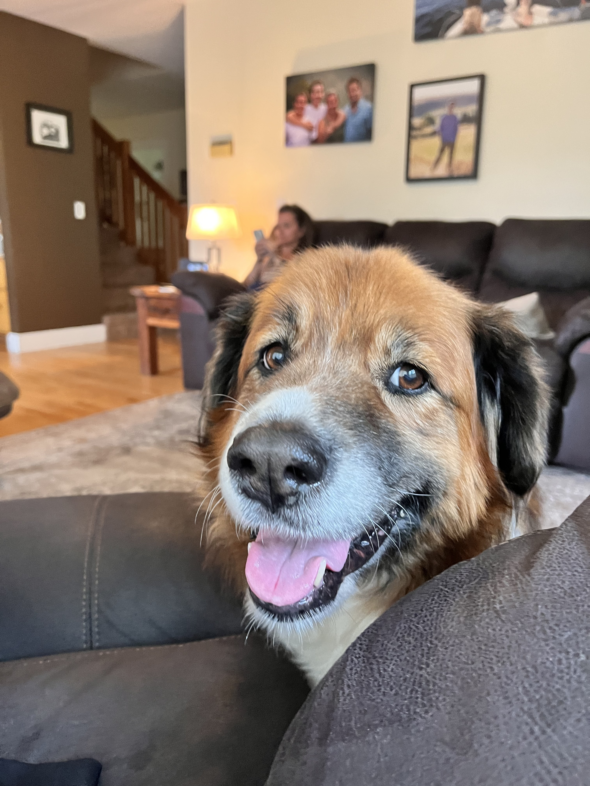

07 - FILES
Study Guide for Python Programming: Unit 07 - Files

Babe says that files are persistent storage!
File Quick Ref
Here’s a summary of the syntax for the specified Python file functions:
- open()
- Opens a file and returns a file object.
- Syntax:
open(file, mode='r', buffering=-1, encoding=None, errors=None, newline=None, closefd=True, opener=None) - The
modeparameter specifies the mode in which the file is opened (‘r’ for reading, ‘w’ for writing, etc.). - Other parameters like
encoding,errors, andnewlineare optional and allow further customization of file handling.
- read()
- Reads the entire file or a specified number of characters from the file.
- Syntax:
file.read(size=-1) sizeis an optional parameter that specifies the number of characters to read. If omitted or negative, the entire content of the file will be read.
- readlines()
- Reads the entire file and returns a list of strings, each representing one line of the file.
- Syntax:
file.readlines(hint=-1) - The
hintparameter is optional and can be used to control the number of lines read. If the total number of characters read is approximatelyhint, reading stops.
- write()
- Writes a specified string to the file.
- Syntax:
file.write(string) - This function writes the
stringto the file, returning the number of characters written.
Key Concepts
File Handling Basics
- Persistence Layer: Files allow for data storage beyond the runtime of a program.
- File Operations: Mainly include reading from and writing to files.
- File Handle: A variable created by opening a file, used to perform operations on the file.
Reading from a File
- Two Methods:
- Read All at Once: Using
handle.read()inside awith open(filename, 'r') as handleblock. - Read Line by Line: Looping over
handle.readlines()to process each line individually.
- Read All at Once: Using
Writing to a File
- Write Mode (
'w'): Overwrites the file or creates a new one if it doesn’t exist. - Append Mode (
'a'): Adds content to the end of the file without overwriting existing content.
File Paths
- Relative Path: Specifies a file location relative to the current directory.
- Absolute Path: Specifies the exact file location on the filesystem from the root directory.
Error Handling
- Try-Except Block: Essential for handling I/O operations to manage exceptions like
FileNotFoundError.
Practical Applications
- Examples: Programs that save text messages, read and calculate average grades, calorie lookups in a data file, and a spell checker.
Practice Questions
- What does
with open(file,'w') as fdo in a Python script?- A. Opens the file in write mode and creates a file handle named
f. - B. Opens the file in read mode and creates a file handle named
f. - C. Deletes the file and creates a new empty file.
- D. Reads the entire content of the file into
f.
- A. Opens the file in write mode and creates a file handle named
- In file handling, what is the purpose of the
try...exceptblock?- A. To check if a file exists before trying to open it.
- B. To ensure that a file is closed after reading or writing.
- C. To handle errors that occur during file operations.
- D. To improve the performance of file reading/writing.
- Which of the following is not an example of secondary (persistent) memory?
- A. Flash Memory
- B. Hard Disk Drive (HDD)
- C. Random-Access Memory (RAM)
- D. Solid State Disk (SSD)
- What is wrong with the following code:
with open(file,'w'): file.write("Hello")?- A. No file handle
- B. Cannot write - file opened for reading
- C. File
a.txtdoes not exist - D. Nothing is wrong!
- When is an absolute path required in file handling in Python?
- A. When the file is in the current working directory.
- B. When the file is in a different directory than the current one.
- C. Only when the file is on a different physical drive.
- D. Absolute paths are never required in Python.
Correct Answers and Explanations
- Answer: A. Opens the file in write mode and creates a file handle named
f.- Explanation: The
with open()statement opens a file in the specified mode (‘w’ for write in this case) and assigns a handle (f) for file operations.
- Explanation: The
- Answer: C. To handle errors that occur during file operations.
- Explanation: The
try...exceptblock is used to catch and handle exceptions, likeFileNotFoundError, that might occur during file operations.
- Explanation: The
- Answer: C. Random-Access Memory (RAM)
- Explanation: RAM is a type of primary memory, not secondary (persistent) memory. Flash Memory, HDD, and SSD are examples of secondary memory.
- Answer: A. No file handle
- Explanation: The correct syntax should be
with open(file,'w') as f: f.write("Hello"). The file handle (f) is missing in the given code.
- Explanation: The correct syntax should be
- Answer: B. When the file is in a different directory than the current one.
- Explanation: Absolute paths are needed when accessing files that are not in the current working directory.